呦呼！再過幾天就要放年假了，超開心的！
可愛的卡ㄋㄟ麻年前飛出國，家裡剩下一老一小！？
(出國前還被她戳了一下，100年都過快一個月了一篇文都沒有 XD)
所以年節期間我們要盡一下"孝道"去關心一下卡ㄋㄟ拔跟卡ㄋㄟ有沒有飯吃，
為了年節娛興節目做準備，我又敗了一樣復古懷舊的玩意兒啦！哈哈哈
 『無敵彈珠樂』
『無敵彈珠樂』
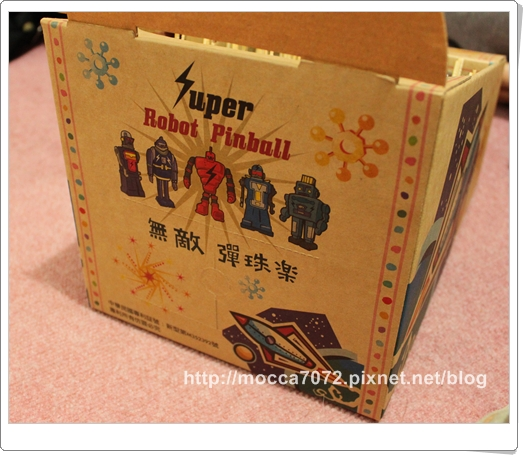\
繼馬桶吸把後，看到我買這種東西，相信各位也不會太意外吧！XD
這是我在別人部落格上看到的，然後一整個又燒到我的無腦神經！噗
在7-11敗入的『開運無敵彈珠台』
聽起來就好運旺旺來，很有年味兒呀！是不是~ 
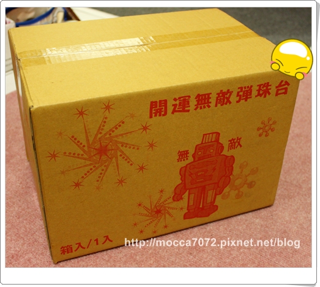
小時候在夜市看到就一定會打彈珠，上次去花蓮，我跟卡內拔麻都還有玩咧！
但時代不同啦！現在的小孩手上的玩具都變成唉鳯跟唉佩 搞不好都不知這東西
搞不好都不知這東西
不誇張！在餐廳或路上都常常看到這景象！
嘖嘖嘖～醬感覺我們小時候也太好打發了吧！哈哈哈～
摩卡卡這九年級生對老木的新玩具也完全沒興趣！
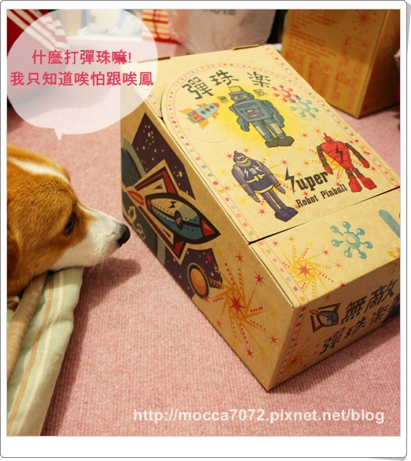
材質就是很簡單的一個厚紙板做成，上面是無敵鐵金剛的圖案！
非常的輕巧，所以如果一不小心被摩卡卡一腳踩到，
彈珠台就可以直接轉送給樓下的資源回收，正式掰掰啦！
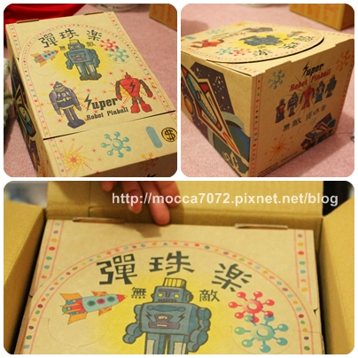
頭大的傢伙總是很能找地方"愧桃"，居然醬也行！
而且高度還剛剛好，玩膩了我看就直接給卡卡當枕頭好了！
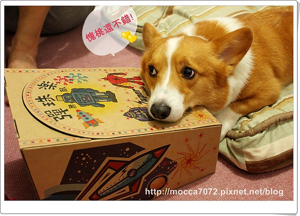
我們許大哥完全沒有要離開的意思！
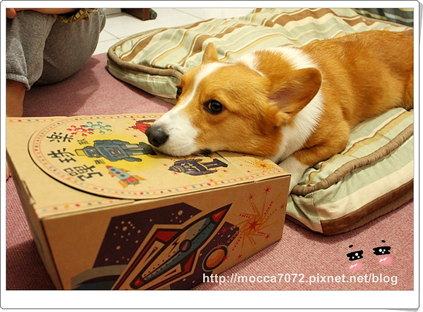
配件包就更陽春了，哈哈哈，有一包牙籤、彈珠、冰淇淋挖勺
上面的洞洞都已經挖好了，直接拿牙籤戳進去就好！
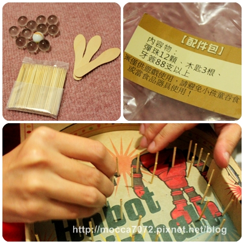
用冰淇淋挖勺雖然很好笑，但真的太適合了！將將好吶～
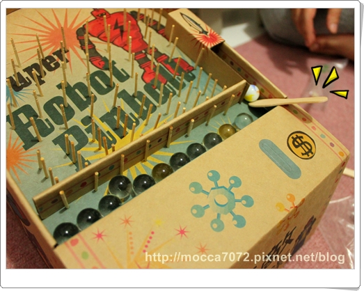
一組裝完成，眾人就迫不及待先試玩一下！
它有附上一張遊戲規則，有挑戰大家就會小小認真拼鬥！哈哈哈
重點是還有投幣孔，哦耶！過年可以抱這台去斂財啦！.gif") 至少把本錢賺回來嘛！？
至少把本錢賺回來嘛！？
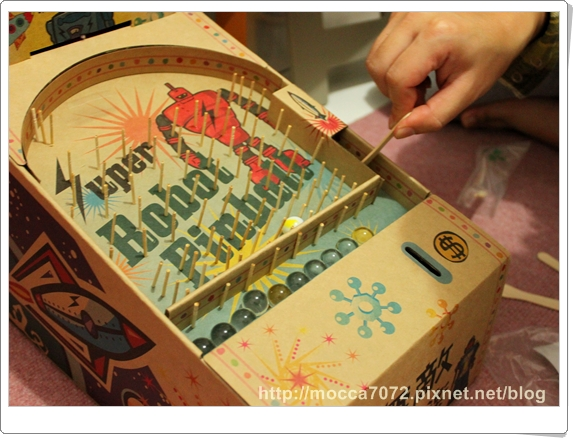
玩這個一定要有小獎品的嘛！
在後方的小洞有放了一袋糖果零食！
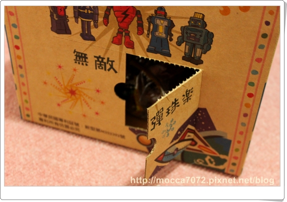
都是些復古的小零食，有柑仔糖、梅心糖、香蕉乾-->這沒吃過
黑嚕嚕的看起來怪可怕的！ㄎㄎㄎ
不過目前還沒拆封，等過年才要正式開放給民眾玩耍 XD
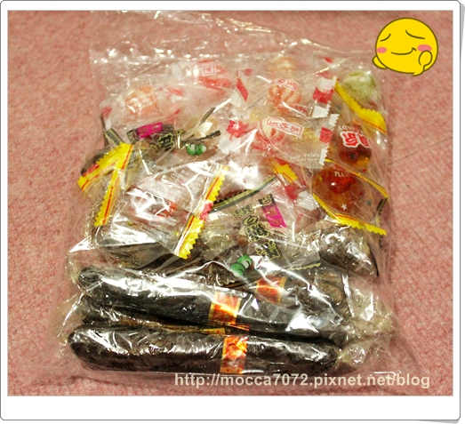
ｏｈ ｙａ～今年過年有新招可以玩啦！到時候就抱著這台走天下，騙小蛤子的錢！
一次５塊，搞不好路上休息就可以賺個小旅費，哈哈哈！那順便再賣個香腸好了！.gif")
毛茸茸我到台中站要記得來玩呦！！XDDDDDDDD
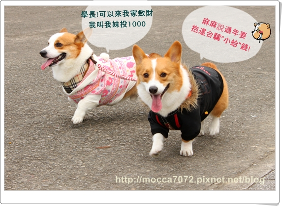
摩卡卡家先拜個早年，預祝大家新年快樂！
如果看到我在台北街頭擺攤，記得來捧捧場啊各位！